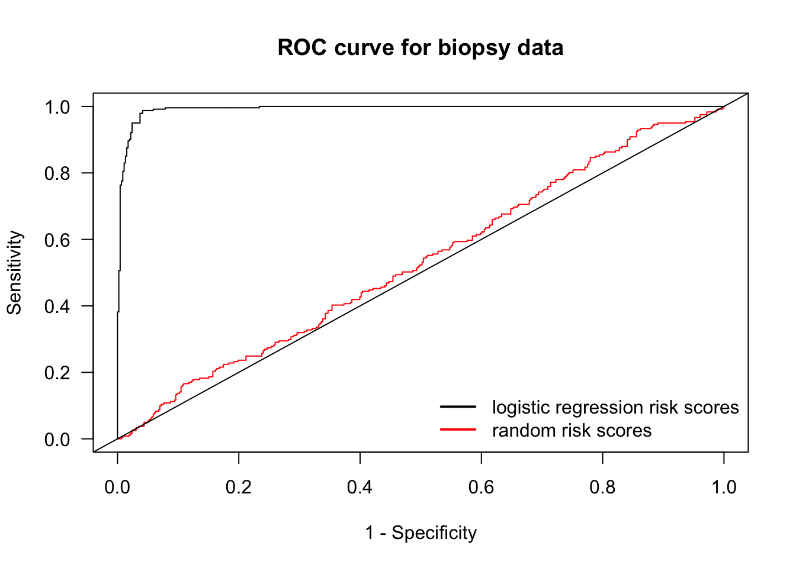

Chapter 5 Risk Prediction and Validation (Part I)
5.1 Risk Prediction/Stratification
For binary outcomes, a risk prediction is related to the predicted probability that an individual has or will develop a certain condition/trait.
Examples of a risk prediction for a binary outcome:
Probability that someone has hypertension.
Probability that someone has type-2 diabetes.
Probability someone will be hospitalized over the next 1 year.
Risk stratification: Often, a risk prediction model will only report whether or not someone belongs to one of several risk strata.
- For example, high, medium, or low risk.
5.2 Area under the ROC curve and the C-statistic
5.2.1 Sensitivity and Specificity
Let \(g(\mathbf{x}_{i})\) be a risk score for an individual with covariate vector \(\mathbf{x}_{i}\).
Higher values of \(g(\mathbf{x}_{i})\) are supposed to imply greater probability that the binary outcome \(Y_{i}\) is equal to \(1\).
- Though \(g(\mathbf{x}_{i})\) does not necessarily have to be a predicted probability.
The value \(t\) will be a threshold which determines whether or not, we predict \(Y_{i} = 1\) or not.
- \(g(\mathbf{x}_{i}) \geq t\) implies \(Y_{i} = 1\)
- \(g(\mathbf{x}_{i}) < t\) implies \(Y_{i} = 0\)
The sensitivity of the risk score \(g(\mathbf{x}_{i})\) with the threshold \(t\) is defined as the probability you “predict” \(Y_{i} = 1\) assuming that \(Y_{i}\) is, in fact, equal to \(1\).
In other words, the sensitivity is the probability of making the right decision given that \(Y_{i} = 1\).
- Sensitivity is often called the “true positive rate”.
The sensitivity is defined as: \[\begin{eqnarray} \textrm{Sensitivity}(t; g) &=& P\big\{ g(\mathbf{x}_{i}) \geq t| Y_{i} = 1 \big\} \nonumber \\ &=& \frac{P\big\{ g(\mathbf{x}_{i}) \geq t, Y_{i} = 1 \big\}}{P\big\{ Y_{i} = 1 \big\} }\nonumber \\ &=& \frac{P\big\{ g(\mathbf{x}_{i}) \geq t, Y_{i} = 1 \big\}}{ P\big\{ g(\mathbf{x}_{i}) \geq t, Y_{i} = 1 \big\} + P\big\{ g(\mathbf{x}_{i}) < t, Y_{i} = 1 \big\}} \end{eqnarray}\]
For a worthless risk score that is totally uninformative about the outcome, we should expect the sensitivity to be close to \(P\{ g(\mathbf{x}_{i}) \geq t \}\).
- You can compute the in-sample sensitivity with \[\begin{eqnarray} \hat{\textrm{Sensitivity}}(t; g) &=& \frac{\sum_{i=1}^{n} I\big\{ g(\mathbf{x}_{i}) \geq t, Y_{i} = 1 \big\} }{ \sum_{i=1}^{n} I\big\{g(\mathbf{x}_{i}) \geq t, Y_{i} = 1 \big\} + \sum_{i=1}^{n} I\big\{ g(\mathbf{x}_{i}) < t, Y_{i} = 1 \big\}} \nonumber \\ &=& \frac{\textrm{number of true positives}}{\textrm{number of true positives} + \textrm{number of false negatives} } \end{eqnarray}\]
The specificity of the risk score \(g(\mathbf{x}_{i})\) with the threshold \(t\) is defined as the probability you “predict” \(Y_{i} = 0\) assuming that \(Y_{i}\) is, in fact, equal to \(0\).
The specificity is defined as: \[\begin{eqnarray} \textrm{Specificity}(t; g) &=& P\big\{ g(\mathbf{x}_{i}) < t| Y_{i} = 0 \big\} \nonumber \\ &=& \frac{P\big\{ g(\mathbf{x}_{i}) < t, Y_{i} = 0 \big\}}{ P\big\{ g(\mathbf{x}_{i}) < t, Y_{i} = 0 \big\} + P\big\{ g(\mathbf{x}_{i}) \geq t, Y_{i} = 0 \big\}} \end{eqnarray}\]
Note that \(1 - \textrm{Specificity}(t; g) = P\big\{ g(\mathbf{x}_{i}) \geq t| Y_{i} = 0 \big\}\).
- \(1 - \textrm{Specificity}(t; g)\) is often called the “false positive rate”
You can compute the in-sample specificity with \[\begin{eqnarray} \hat{\textrm{Specificity}}(t; g) &=& \frac{\sum_{i=1}^{n} I\big\{ g(\mathbf{x}_{i}) < t, Y_{i} = 0 \big\} }{ \sum_{i=1}^{n} I\big\{g(\mathbf{x}_{i}) < t, Y_{i} = 0 \big\} + \sum_{i=1}^{n} I\big\{ g(\mathbf{x}_{i}) \geq t, Y_{i} = 0 \big\}} \nonumber \\ &=& \frac{\textrm{number of true negatives}}{\textrm{number of true negatives} + \textrm{number of false positives} } \end{eqnarray}\]
For a worthless risk score that is totally uninformative about the outcome, we should expect the specificity to be close to \(P\{ g(\mathbf{x}_{i}) < t \}\).
Note that high values of both sensitivity and specificity is good.
- For a “perfect” risk score, both sensitivity and specificity would be equal to \(1\).
5.2.2 The ROC curve
The receiver operating characteristic (ROC) curve graphically depicts how sensitivity and specificity change as the threshold \(t\) varies.
Let \(t_{i} = g(\mathbf{x}_{i})\) and let \(t_{(1)} > t_{(2)} > ... > t_{(n)}\) be the ordered values of \(t_{1}, \ldots, t_{n}\).
To construct an ROC curve we are going to plot sentivity vs. 1 - specificity for each of the thresholds \(t_{(1)}, \ldots, t_{(n)}\).
Let \(x_{i} = 1 - \hat{\textrm{Specificity}}(t_{(i)}; g)\) and \(y_{i} = \hat{\textrm{Sensitivity}}(t_{(i)}; g)\).
We will define \(x_{0} = y_{0} = 0\) and \(x_{n+1} = y_{n+1} = 1\).
- \(x_{0}\), \(y_{0}\) represent 1 - specificity and sensitivity when using \(t = \infty\).
- \(x_{n+1}\), \(y_{n+1}\) represent 1 - specificity and sensitivity when using \(t = -\infty\).
Plotting \(y_{i}\) vs. \(x_{i}\) for \(i = 0, \ldots, n+1\) will give you the ROC curve.
Ideally, the values of \(y_{i}\) will close to \(1\) for all \(i\).
For a worthless risk score we should expect both \(y_{i}\) and \(x_{i}\) to be roughly equal to \(P(g(\mathbf{x}_{i}) \geq t)\).
Hence, plotting \(y_{i}\) vs. \(x_{i}\) should be fairly close to the line \(y=x\).
5.2.3 Computing the ROC curve
- To try computing an ROC curve, we will use the Wisconsin Breast Cancer dataset
which is available in the
biopsydataset from theMASSpackage.
## ID V1 V2 V3 V4 V5 V6 V7 V8 V9 class
## 1 1000025 5 1 1 1 2 1 3 1 1 benign
## 2 1002945 5 4 4 5 7 10 3 2 1 benign
## 3 1015425 3 1 1 1 2 2 3 1 1 benign
## 4 1016277 6 8 8 1 3 4 3 7 1 benign
## 5 1017023 4 1 1 3 2 1 3 1 1 benign
## 6 1017122 8 10 10 8 7 10 9 7 1 malignant##
## benign malignant
## 458 241##
## 0 1
## 458 241Let’s compute risk scores for tumor malignancy by using a logistic regression model with
classas the outcome and variablesV1, V3, V4, V7, V8as the covariates.Our risk score for the \(i^{th}\) case, will be the predicted probability of having a malignant tumor given the covariate information
logreg.model <- glm(tumor.type ~ V1 + V3 + V4 + V7 + V8, family="binomial", data=biopsy)
risk.score <- logreg.model$fitted.values- Let’s now compute the sensitivity and specificity for a threshold of \(t = 0.5\)
Sensitivity <- function(thresh, Y, risk.score) {
sum((risk.score >= thresh)*Y)/sum(Y)
}
Specificity <- function(thresh, Y, risk.score) {
sum((risk.score < thresh)*(1 - Y))/sum(1 - Y)
}
Sensitivity(0.5, Y=biopsy$tumor.type, risk.score)## [1] 0.9502075## [1] 0.9759825- For the threshold of \(t = 0.5\), we have a sensitivity of about \(0.95\) and a specificity of about \(0.975\).
- Now, let’s compute the ROC curve by computing sensitivity and specificity for each risk score (plus the values of 0 and 1).
sorted.riskscores <- c(1, sort(risk.score, decreasing=TRUE), 0)
mm <- length(sorted.riskscores)
roc.y <- roc.x <- rep(0, mm)
for(k in 1:mm) {
thresh.val <- sorted.riskscores[k]
roc.y[k] <- Sensitivity(thresh.val, Y=biopsy$tumor.type, risk.score)
roc.x[k] <- 1 - Specificity(thresh.val, Y=biopsy$tumor.type, risk.score)
}
plot(roc.x, roc.y, main="ROC curve for biopsy data", xlab="1 - Specificity",
ylab="Sensitivity", las=1)
lines(roc.x, roc.y, type="s")
abline(0, 1)
- Let’s compare the logistic regression ROC curve with a worthless risk score where we generate risk scores randomly from a uniform distribution.
rr <- runif(nrow(biopsy))
sorted.rr <- c(1, sort(rr, decreasing=TRUE), 0)
mm <- length(sorted.rr)
roc.random.y <- roc.random.x <- rep(0, mm)
for(k in 1:mm) {
thresh.val <- sorted.rr[k]
roc.random.y[k] <- Sensitivity(thresh.val, Y=biopsy$tumor.type, rr)
roc.random.x[k] <- 1 - Specificity(thresh.val, Y=biopsy$tumor.type, rr)
}
plot(roc.random.x, roc.random.y, main="ROC curve for biopsy data", xlab="1 - Specificity",
ylab="Sensitivity", las=1, col="red", type="n")
lines(roc.random.x, roc.random.y, type="s", col="red")
lines(roc.x, roc.y, type="s")
legend("bottomright", legend=c("logistic regression risk scores", "random risk scores"),
col=c("black", "red"), lwd=2, bty='n')
abline(0, 1)
5.3 Area under the ROC curve
The Area Under the ROC curve AUC is the area under the graph of the points \((x_{i}, y_{i})\), \(i = 0, \ldots, n+1\).
The AUC is given by \[\begin{equation} AUC = \sum_{i=0}^{n} y_{i}(x_{i+1} - x_{i}) \end{equation}\]
5.3.1 Rewriting the formula for the AUC
Note that \[\begin{equation} y_{i} = \sum_{k=1}^{n} I\{ g(\mathbf{x}_{k}) \geq t_{(i)}\} I\{ Y_{k} = 1 \}\Big/\sum_{k=1}^{n} I\{ Y_{k} = 1\} = \frac{1}{n\hat{p}}\sum_{k=1}^{n} a_{ki}, \end{equation}\] where \(n\hat{p} = \sum_{k=1}^{n} I\{ Y_{k} = 1\}\) and \(a_{ki} = I\{ g(\mathbf{x}_{k}) \geq t_{(i)}\} I\{ Y_{k} = 1 \}\).
Because \(t_{(i)} \geq t_{(i+1)}\): \[\begin{eqnarray} x_{i+1} - x_{i} &=& \sum_{k=1}^{n} \Big(I\{ g(\mathbf{x}_{k}) \geq t_{(i+1)}, Y_{k} = 0 \} - I\{ g(\mathbf{x}_{k}) \geq t_{(i)}, Y_{k} = 0 \}\Big)\Big/\sum_{k=1}^{n} I\{ Y_{k} = 0\} \nonumber \\ &=& \frac{1}{n(1 - \hat{p})}\sum_{k=1}^{n} I\{g(\mathbf{x}_{k}) < t_{(i)}\} I\{ g(\mathbf{x}_{k}) \geq t_{(i+1)}\} I\{Y_{k} = 0 \} \\ &=& \frac{1}{n(1 - \hat{p})}\sum_{k=1}^{n} I\{ g(\mathbf{x}_{k}) = t_{(i+1)}\} I\{Y_{k} = 0 \} \nonumber \\ &=& \frac{1}{n(1 - \hat{p})}\sum_{k=1}^{n} b_{ki} \end{eqnarray}\] where \(n(1 - \hat{p}) = \sum_{k=1}^{n} I\{ Y_{k} = 0\}\) and \(b_{ki} = I\{ g(\mathbf{x}_{k}) = t_{(i+1)}\} I\{Y_{k} = 0 \}\).
So, we can express the AUC as: \[\begin{eqnarray} AUC &=& \frac{1}{n^{2}\hat{p}(1 - \hat{p})}\sum_{i=0}^{n} \sum_{k=0}^{n} a_{ki} \sum_{k=0}^{n} b_{ki} = \frac{1}{n^{2}\hat{p}(1 - \hat{p})} \sum_{k=0}^{n} \sum_{j=0}^{n}\sum_{i=0}^{n} a_{ki} b_{ji} \\ &=& \frac{1}{n^{2}\hat{p}(1 - \hat{p})} \sum_{k=0}^{n} \sum_{j=0}^{n} I\{ Y_{k} = 1 \} I\{Y_{j} = 0 \} \sum_{i=0}^{n} I\{ g(\mathbf{x}_{k}) \geq t_{(i)}\}I\{ g(\mathbf{x}_{j}) = t_{(i+1)}\} \tag{5.1} \end{eqnarray}\]
Note now that because the \(t_{(i)}\) are the ordered values of the \(g(\mathbf{x}_{h})\) \[\begin{equation} \sum_{i=0}^{n} I\{ g(\mathbf{x}_{k}) \geq t_{(i)}\}I\{ g(\mathbf{x}_{j}) = t_{(i+1)}\} = I\{ g(\mathbf{x}_{k}) \geq t_{(j^{*} - 1)}\} = I\{ g(\mathbf{x}_{k}) > t_{(j^{*})}\}, \end{equation}\] where \(j^{*}\) is the index such that \(t_{(j^{*})} = g(\mathbf{x}_{j})\).
Hence, \[\begin{equation} \sum_{i=0}^{n} I\{ g(\mathbf{x}_{k}) \geq t_{(i)}\}I\{ g(\mathbf{x}_{j}) = t_{(i+1)}\} = I\{ g(\mathbf{x}_{k}) > g(\mathbf{x}_{j}) \} \tag{5.2} \end{equation}\]
5.3.2 Interpreting the AUC
We can write the AUC as \[\begin{equation} \textrm{AUC} = S_{1}/S_{2} \end{equation}\]
The sum \(S_{2}\) counts the number of all discordant pairs of responses
- The pair of outcomes \((Y_{k}, Y_{j})\) is discordant if \(Y_{k} = 1\) and \(Y_{j}=0\) or vice versa. \[\begin{equation} S_{2} = \sum_{i=1}^{n}I\{ Y_{i} = 0\}\sum_{i=1}^{n} I\{Y_{i} = 1\} = \sum_{j=1}^{n}\sum_{k=1}^{n} I\{ Y_{j} = 0\} I\{Y_{k} = 1\} \end{equation}\]
Now, look at the sum \(S_{1}\): \[\begin{eqnarray} S_{1} &=& \sum_{k=0}^{n} \sum_{j=0}^{n} I\{ g(\mathbf{x}_{k}) > g(\mathbf{x}_{j}) \}I\{ Y_{k} = 1 \} I\{Y_{j} = 0 \} \end{eqnarray}\]
\(S_{1}\) looks at all discordant pairs of responses and counts the number of pairs where the risk score ordering agrees with the ordering of the responses.
To summarize: The AUC is the proportion of discordant outcome pairs where the risk score ordering for that pair agrees with the ordering of the outcomes
An AUC of \(0.5\) means that the risk score is performing about the same as a risk score generated at random.
The AUC is often referred to as the concordance index, or c-index.
- Let’s compute the AUC for our logistic regression-based risk score for the
biopsydata:
## [1] 0.9928- This is a very high AUC: \(0.9928\)
5.3.3 Computing the AUC in R
You can compute the AUC in R without writing all your own functions by using the
pROCpackage.With the
pROCpackage, you start by inputting your binary outcomes and risk scores into therocfunction in order to get an “roc object”.
- To find the AUC, you can then use
auc(roc.biopsy)
## Area under the curve: 0.9928- You can plot the ROC curve by just plugging in the roc object into the
plotfunction.
- To also print the AUC value, you can just add
print.auc=TRUE

5.4 Calibration
The AUC, or c-index is a measure of the statistical discrimination of the risk score.
However, a high value of the AUC does not imply that the risk score is well-calibrated.
Calibration refers to the agreement between observed frequency of the outcome and the fitted probabilities of those outcomes.
For example, if we look at a group of individuals all of whom have a fitted probability of \(0.2\), then we should expect that roughly \(20\%\) of the outcomes should equal \(1\) from this group.
We can examine this graphically by looking at the observed proportion of successes vs. the fitted probabilities for several risk strata.
Specifically, if we have risk score-cutoffs \(r_{1}, \ldots, r_{G}\), the observed proportion of successes in the \(k^{th}\) risk stratum is \[\begin{equation} O_{k} = \sum_{i=1}^{n} Y_{i}I\{ r_{k-1} < g(\mathbf{x}_{i}) \leq r_{k} \} \Big/\sum_{i=1}^{n} I\{ r_{k-1} < g(\mathbf{x}_{i}) \leq r_{k} \} \end{equation}\]
The expected proportion of successes in the \(k^{th}\) risk stratum is \[\begin{equation} P_{k} = \sum_{i=1}^{n} g(\mathbf{x}_{i})I\{ r_{k-1} < g(\mathbf{x}_{i}) \leq r_{k} \} \Big/\sum_{i=1}^{n} I\{ r_{k-1} < g(\mathbf{x}_{i}) \leq r_{k} \} \end{equation}\]
If \(g(\mathbf{x}_{i})\) is well-calibrated, \(O_{k}\) and \(P_{k}\) should be fairly similar for each \(k\).
Let’s make a calibration plot for the
biopsydata.First, let’s make 10 risk strata using the quantiles of our logistic regression-based risk score.
## 10% 20% 30% 40% 50%
## 0.000000000 0.001505966 0.002756161 0.005385182 0.010154320 0.019231612
## 60% 70% 80% 90%
## 0.074574998 0.841857858 0.989561027 0.999471042 1.000000000- Now, compute observed and expected frequencies for each of the risk strata and plot the result:
observed.freq <- pred.freq <- rep(0, 10)
for(k in 2:11) {
ind <- risk.score <= rr[k] & risk.score > rr[k-1] # stratum indicators
observed.freq[k] <- sum(biopsy$tumor.type[ind])/sum(ind)
pred.freq[k] <- sum(risk.score[ind])/sum(ind)
}
plot(observed.freq, pred.freq, xlab="Observed Frequency",
ylab = "Predicted Frequency",
las=1, main="Calibration plot for biopsy data")
lines(observed.freq, pred.freq)
abline(0, 1, lty=2)- Most of the risk scores are more concentrated near zero, but this calibration plot shows fairly
good calibration.
- Expected vs. Observed frequencies are mostly close to the \(y = x\) straight line.
- Sometimes an estimated intercept and slope from
a regression of expected vs. observed frequencies is reported.
- We should expect that the intercept should be close to \(0\) and the slope should be close to \(1\) for a well-calibrated risk score.
##
## Call:
## lm(formula = pred.freq ~ observed.freq)
##
## Coefficients:
## (Intercept) observed.freq
## 0.001759 0.994948- The Hosmer–Lemeshow test is a more formal test that compares these types of observed vs. expected frequencies.
5.5 Longitudinal Data and Risk Score Validation
When you have longitudinal responses \(Y_{ij}\), sensitivity, specificity, and the AUC/c-index will depend on what exactly you are trying to predict.
If you are trying to predict \(Y_{ij} = 1\) vs. \(Y_{ij} = 0\) for each \(j\), sensitivity and specificity will be defined by \[\begin{equation} P\{ g(\mathbf{x}_{ij}) \geq t|Y_{ij} = 1\} \qquad \textrm{ and } \qquad P\{ g(\mathbf{x}_{ij}) < t|Y_{ij} = 0\} \end{equation}\]
Here, \(g(\mathbf{x}_{ij})\) would be a risk score based on covariate information up to and including time \(t_{ij}\) and could include responses before time \(t_{ij}\).
In this case, the AUC would be calculated in the same way as the non-longitudinal case - you would just sum over all responses and risk scores across all individuals and time points.
In other cases, you may want to predict a single outcome \(\tilde{Y}_{i}\) even though the covariates are collected longitudinally over additional time points.
For example, \(\tilde{Y}_{i}\) might be an indicator of whether or not a patient is hypertensive over a particular time window.
In this case, you might compute a single risk score \(\hat{g}_{i}\) for each individual.
For example, \(\hat{g}_{i} = \frac{1}{n_{i}}\sum_{j=1}^{n_{i}} g(\mathbf{x}_{ij})\).
For example, \(\hat{g}_{i} = \textrm{median} \{ g(\mathbf{x}_{i1}), \ldots, g(\mathbf{x}_{in_{i}}) \}\).
For example, \(\hat{g}_{i} = \max\{ g(\mathbf{x}_{i1}), \ldots, g(\mathbf{x}_{in_{i}}) \}\).
To “validate” a risk score, you generally want to look at out-of-sample performance of the risk score.
For example, you might build your risk model using data from individuals enrolled within a specific six-month time window and look at the AUC statistic for outcomes for individuals who enrolled in a different time window.
Looking at the out-of-sample performance over a different time window or using data from a different source is often a good way of justifying the robustness/generalizability of a particular risk model.